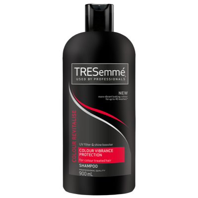
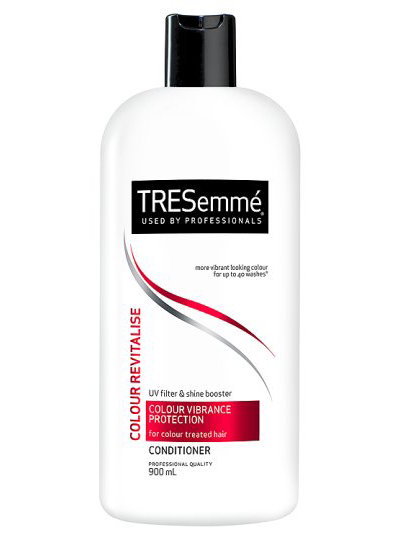

How To Keep Your Hair Colour From Fading
Many of us have had our hair dyed before and most of us will continue to do so. But does the colour keep fading really quickly, or is it just our imagination? Thankfully, there are ways to prevent your hair colour from fading quickly, and to keep it looking vibrant and fresh for longer. Take in our quick and easy tips on just how to do this.
Tip 1:
Get your hair dyed in a professional salon. This ensures that you colour will be even and vibrant throughout your hair.
Tip 2:
Use a shampoo and conditioner that is colour-friendly. Shampoos and Conditioners that are not specifically formulated to treat coloured hair can strip your hair of it’s colour and, in the case of blond tones, make your hair appear brassy. We suggest the TRESemmé Colour Revitalise as one such amazing colour-friendly shampoo. Your colour will last much longer and look much more vibrant.
Tip 3:
Wash your hair less frequently and with cool water. Washing with warm water stretches out the hair and makes it lose the colour much quicker.
Tip 4:
Protect your hair from the sun. The sun can cause your hair to dry out and get dull, which can cause your colour to fade. We suggest the TRESemmé Extra Control Mousse, or the TRESemmé Salon Finish Volume and Lift Mousse. Both of these products contain UV filters which are perfect for protecting your hair from the sun’s harmful rays.
Tip 5:
Little known fact, but chlorine can damage your hair, which causes the colour to fade quicker. We don’t want this to happen, so avoid it where possible. If it’s not possible, then protect your hair colour by deep-conditioning your hair before swimming in a pool.
Tip 6:
Keep your hair healthy. Healthy hair not only looks god, but retains colour much better. We recommend you use the Dove Intensive Repair Treatment Mask for a regular, deep treatment that repairs your hair from the inside and protects it all round.
 Dove Colour Care
Dove Colour Care
Shampoo
 Dove Colour Care
Dove Colour Care
Conditioner
 Dove Intensive Repair
Dove Intensive Repair
Deep Treatment Mask

TRESemmé Colour
Revitalise Shampoo

TRESemmé Colour
Revitalise Conditioner